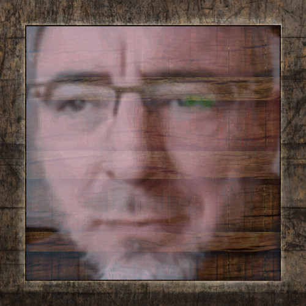

Idea

There are a lot of technique s for rendering volumetrics in games,
In this article I'll cover specifically clouds,
and more specifically implementing a voxel based technique similar/based from the one talked about by Nubis.
Rendering of volumetric clouds in real-time
There are a lot of technique s for rendering volumetrics in games,
In this article I'll cover specifically clouds,
and more specifically implementing a voxel based technique similar/based from the one talked about by Nubis.
Most volumetric renderers rely on Ray marching,
since it's a simple and relatively efficient way to sample heterogeneous volumes (volumes with non constant density).
We'll also be using this as the basis for rendering our clouds.
If you're already familiar with the basics feel free to skip this section.
What Ray marching tries to achieve is finding the total density and lighting of a volume along a Ray.
Since getting the exact result would be impossible to get in real time we approximate it by taking a set amount of steps/samples.
The march along the ray, number shows accumulated density
 For every step along the Ray we sample the density of the volume and accumulate the total along the ray.
For every step along the Ray we sample the density of the volume and accumulate the total along the ray.
# Basic accumulation
# GLSL:
float3 marchVolume(float3 rayOrigin, float3 rayDir, float3 backgroundColor) {
float stepSize = MAX_DISTANCE / NUM_STEPS;
float3 pos = rayOrigin;
float totalDensity = 0.0;
float3 light = float3(0.0, 0.0, 0.0);
//Step along the ray
for (int i = 0; i < NUM_STEPS; i++) {
pos += rayDir * stepSize;
float density = sampleDensity(pos);
//Important to scale by stepsize since we're only sampling a single point
totalDensity += density * stepSize;
//Calculate how much light is blocked using Beer's law
float transmissance = exp(-totalDensity);
//Calculate lighting at this point, scale by amount blocked and density of this point.
light += CalculateLighting() * transmissance * density * stepSize;
}
//The background behind the cloud is also passed light, so we also add it to the final lighting
light += backgroundColor * transmissance;
return light;
}
Extra rays towards the light source, using transmissance calculated along the way
 If for now we calculate our density using distance for a sphere.
If for now we calculate our density using distance for a sphere.
# Lighting and example density
# GLSL:
float SampleDensity(float3 pos) {
float baseDensity = 10;
float sphereRadius = 3;
float3 sphereOffset = _sample; // example sphere at 0 0 0
float distToSphereSquared = dot(sphereOffset, sphereOffset);
float profile = baseDensity * (1 - distToSphereSquared / sphereRadius);
return saturate(profile);
}
float3 CalculateLighting(float3 pos) {
float stepSize = MAX_LIGHT_DISTANCE / NUM_LIGHT_STEPS;
float totalDensity = 0.0;
float3 sample = pos;
//Step towards the light
for (int i = 0; i < NUM_LIGHT_STEPS; i++) {
sample += LIGHT_DIRECTION * stepSize;
float density = SampleDensity(sample);
totalDensity += density * stepSize;
}
float transmissance = exp(-totalDensity);
return LIGHT * transmissance;
}

Clouds arent just simple spheres, so we need a way to store the density of clouds in a 3d structure.
There are multiple ways to store this data and this is a important choice since there are different benefits/drawbacks to choosing a specific one.
One commonly used technique is:
2.5d Cloud maps
By using multiple layers of 2D textures you can approximate the 3D clouds.
This is cheap to sample since its only 2D textures and allows to quickly get a full sky map,
and even blend between different types of clouds.
However, there is not much control over the actual 3D look of the clouds, and doesnt look to good when going through the clouds.
This technique can be great for a simpler background sky but I'll be choosing about a different way that allows for more versatility.
Voxels
A way to get over the drawbacks of 2.5D clouds is using voxels.
Voxels allow you to fully control the look of the clouds in a 3D structure
and works well for both background clouds and clouds you can go through.
- Sparse
It might seem good to store these voxels in a sparse structure, aka either storing only the voxels where there are actually clouds,
Or using a tree structure to have smaller voxels where there is more detail
 This has a lot of benefits in memory usage allowing you to store significantly more detailed clouds.
This has a lot of benefits in memory usage allowing you to store significantly more detailed clouds.
Using bounding boxes around clouds also allows you to skip sampling empty space.
- Dense
However, storing voxels in a dense structure, thus having a fixed grid of voxels has some great benefits.
Sampling dense grids is faster due to not having to go through the indirection of going through the structure of a sparse grid.
The dense grid can also be used to store extra data such as caching and precomputing lighting, which would be harder to store/update in a sparse grid.
This increase of speed is however at the cost of having to reduce the resolution of the voxels due to the increased memory usage.
Implementating
For this implementation I'll be going with a dense voxel grid.
For loading the voxel data, I recommend using OpenVDB, which loads sparse voxel data files and allows you to store these as dense grids.
This can then be loaded into a 3D texture and sampled in the raymarcher.
https://www.openvdb.org/
Sampling voxel data in our basic raymarcher from earlier:

Like just mentioned choosing a dense voxel structure limits us in resolution of the grid,
this means we lose a lot of finer detail in the shape of the clouds.
Luckily there is a way we can get around this.
What we will do is use a higher resolution 3D noise texture to add detail and erode the smooth low detail base shape.
Low detail clouds
Since we already have a base shape of the clouds we want to use,
we cannot just add detail randomly but have to keep the shape in mind.
Just multiplying the base shape with noise would not achieve the right look, since clouds have somewhat uniform density in the center.
Instead we just want to erode/remove some of the density at the edges of our main shape.
To do this we use our base shape as a profile, and make it have a gradient density at the edges
A 2d slice of the low resolution density profile
To erode only the edges of the profile, we use a remap function.
It takes input with a range and transforms it to fit into a different range

# Remap function
float Remap(float value, float inputMin, float inputMax, float outputMin, float outputMax)
{
return outputMin + (value - inputMin) * (outputMax - outputMin) / (inputMax - inputMin);
}
By using the value of a noise texture as the minimum input range, it erodes the edges of the profile while correctly preserving the density gradient.
For the noise texture itself we need noise that correctly resembles clouds.
For this I use the noise texture supplied by Nubis. Which contain versions of alligator noise generated in Houdini.
The shape of clouds varies across the cloud, In low density areas the noise is more low frequency.
And the bottom of the cloud is usually more wispy vs the top which is more billowy/fluffy.
To achieve this the noise texture contains multiple channels with high frequency and low frequency billowy and wispy noise.
You can then blend between the frequency using the profile (posibly to a power to control the gradient) to blend between high and low frequency noise.
And use either the vertical position or a extra channel in the voxel data to blend between wispy and billowy noise.
Final cloud shape after applying noise based erosion
The lighting in real clouds is not as simple as a straight line towards the sun/light source.
In fact there are more incomming sources and light bounces around the inside of the cloud.
Simulating this would be very expensive but there are some good approximations that give us a more realistic look.
A important factor in lighting volumes is that they do not scatter light evenly in all directions,
In fact they scatter light significantly more forward.
This causes clouds between you and the sun to be way brighter than when looking at clouds opposite to the sun.
This factor can be calculated by the henyey-greenstein function,
It takes a eccentricity factor.
lower values meaning the light is more biased towards the incomming light direction.
# Phase function
float HenyeyGreensteinPhase(float inCosAngle /*the dot product difference between look and light direction*/, float inG /*The eccentricity*/)
{
float num = 1.0 - inG * inG;
float denom = 1.0 + inG * inG - 2.0 * inG * inCosAngle;
float rsqrt_denom = rsqrt(denom);
return num * rsqrt_denom * rsqrt_denom * rsqrt_denom * (1.0 / (4.0 * PI));
}
light += CalculateLighting()
* HenyeyGreensteinPhase(dot(rayDir, LIGHT_DIRECTION), g /*0.2*/) <changed>
* transmissance
* density
* stepSize;
A important factor in lighting clouds is ambient light that comes from the sky.
This causes clouds to be more lit with the color of the sky when not directly illuminated by the sun, and adds more realistic shadowing.
It would be way too expensive or noisy to calculate this by shooting actual rays in "random" directions.
So instead we use a approximation,
We can assume that most of the ambient light will come from the sky above, keeping this in mind we can combine the entire sky in one upwards ray.
What we do is first combine the sky into 1 light source, you do this by integrating the sky hemisphere once. I wont go over how to do this but it can be done by either random sampling or spherical harmonics.
Alternatively you can just pick a color that resembles your sky.
For correct shadowing we shoot a ray upwards, since this light is not directional it is not affected by either phase or sundirection.
That means that this upwards ray can be precalculated for a static grid. And since this data is already blury by itself it can be stored in a lower resolution grid.
To combine this all together we weight the ambient lighting by not only this ray but also by how far into the cloud the sample is.
This is because edges will receive more ambient light from the sides than in the center of the cloud, we can reuse the profile for this.
//TODO: SHOW CODE
In clouds do not only receive light directly from the source, but light also scatters around the inside of the clouds and can hit our sample.
 This would also be too expensive to calculate but we can approximate the results.
This would also be too expensive to calculate but we can approximate the results.
The main effect that comes from multiple in scattering is that the inner parts of the clouds become brighter.
This is because the inner parts receive more light from surrounding in scattering.
We also have to take into account the phase/the angle to the sun here since the scattering is still biased towards the light direction.
The approximation is not too accurate but gives a good looking result, and is very cheap, and this is not too bad since the effect of direct lighting is significantly stronger.
float InScatteringApprox(float _baseDimensionalProfile, float _sun_dot, float _accumulatedDensity)
{
// This accounts for the phase
return exp(-_accumulatedDensity * Remap(_sun_dot, 0.0, 0.9, 0.25, Remap(_baseDimensionalProfile, 1.0, 0.0, 0.05, 0.25)));
}